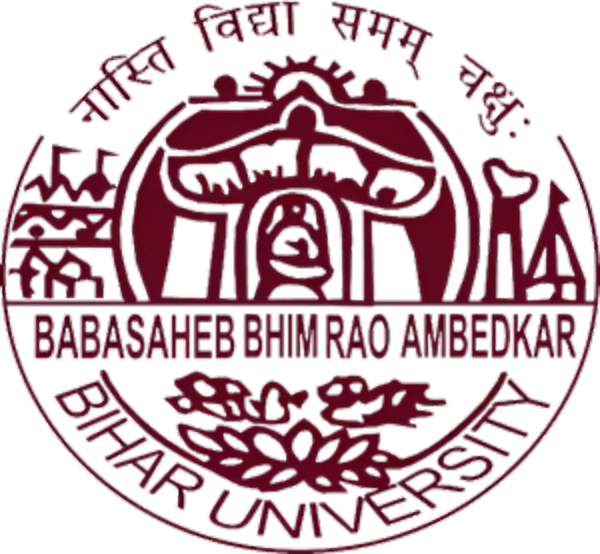

B.R.A. BIHAR UNIVERSITY

MUZAFFARPUR
SYLLABUS
OF
B.C.A.
COURSE STRUCTURE OF B.C.A.
B.R.A. Bihar University, Muzaffarpur
Bachelor of Computer Applications (Semester System)
1st Semester
| Paper Code |
Paper Title |
Internal |
External |
Total |
| BCA-101 | Mathematical Foundation | 20 | 80 | 100 |
| BCA-102 | Computer Fundamentals | 20 | 80 | 100 |
| BCA-103 | Business Communication & Information System | 20 | 80 | 100 |
| BCA-104 | C Programming | 20 | 80 | 100 |
| BCA-105 | Lab on DOS & Windows | 20 | 80 | 100 |
| BCA-106 | Lab on C | 20 | 80 | 100 |
2nd Semester
| Paper Code |
Paper Title |
Internal |
External |
Total |
| BCA-201 | Discrete Mathematics | 20 | 80 | 100 |
| BCA-202 | Computer Architecture | 20 | 80 | 100 |
| BCA-203 | Data Structure through C | 20 | 80 | 100 |
| BCA-204 | System Analysis and Design | 20 | 80 | 100 |
| BCA-205 | Lab on MS-Office | 20 | 80 | 100 |
| BCA-206 | Lab on Data Structure through C | 20 | 80 | 100 |
3rd Semester
| Paper Code |
Paper Title |
Internal |
External |
Total |
| BCA-301 | Fundamentals of Management & Business Accounting | 20 | 80 | 100 |
| BCA-302 | Database Management System | 20 | 80 | 100 |
| BCA-303 | Object Oriented Programming using C++ | 20 | 80 | 100 |
| BCA-304 | Numerical Methodology | 20 | 80 | 100 |
| BCA-305 | Lab on DBMS (SQL/MS-ACCESS) | 20 | 80 | 100 |
| BCA-306 | Lab on C++ | 20 | 80 | 100 |
4th Semester
| Paper Code |
Paper Title |
Internal |
External |
Total |
| BCA-401 | Operations Research | 20 | 80 | 100 |
| BCA-402 | Computer Graphics & Multimedia | 20 | 80 | 100 |
| BCA-403 | Java Programming | 20 | 80 | 100 |
| BCA-404 | Software Engineering Principles | 20 | 80 | 100 |
| BCA-405 | Lab on Java Programming | 20 | 80 | 100 |
| BCA-406 | Lab on Computer Graphics & Linux | 20 | 80 | 100 |
5th Semester
| Paper Code |
Paper Title |
Internal |
External |
Total |
| BCA-501 | Relational Database Management System | 20 | 80 | 100 |
| BCA-502 | Artificial Intelligence through Python Programming | 20 | 80 | 100 |
| BCA-503 | Web Technology (HTML, JavaScript, CSS) | 20 | 80 | 100 |
| BCA-504 | Computer Network, Security and Cyber Law | 20 | 80 | 100 |
| BCA-505 | Lab on Oracle | 20 | 80 | 100 |
| BCA-506 | Lab on Python Programming & Web Technology | 20 | 80 | 100 |
6th Semester
| Paper Code |
Paper Title |
Total Marks |
| BCA-601 | Project Report | 100 |
| BCA-602 | Seminar Presentation | 50 |
| BCA-603 | Viva-Voce | 50 |
Pattern of Question Paper
There will be ten long-answer questions, out of which students
will have to answer five questions. Each question will carry
equal marks.
Examination Duration: 3 hours for each theory and practical paper.
1ST SEMESTER
BCA-101: Mathematical Foundation
Total Lectures: 50
Unit I: Differential Calculus
Successive Differentiation, Leibnitz Theorem, Expansion of
function of one variable in Taylor's and Maclaurin's infinite
series, Maxima and Minima of functions of one variable,
Partial Derivatives, Euler's Theorem, Change of Variables,
Total Differentiation, Taylor's Series in Two Variables,
Maxima and Minima of Two Variables.
Unit II: Integral Calculus
Definite Integral and its application for area, length and
volume, Multiple Integrals, Change of Order of Integration.
Unit III: Differential Equation
First degree and first order differential equation,
Higher order differential equation with constant coefficients,
Linear partial differential equation of first order,
P.D.E. of higher orders with constant coefficients.
Unit IV: Matrix Algebra
Elementary Transformation, Inverse of a Matrix by Row
Operation, Rank, Solution of a System of Linear Simultaneous
Equation by Matrix Method, Eigen Values and Eigen Vectors,
Cayley Hamilton Theorem, Quadratic Forms.
Note
Stress should be given on the development of ideas.
Proofs of theorems and derivation of formulae are not required.
Text Books
- Engineering Mathematics — Dr. B.S. Grewal
- Matrix — A.R. Vashishtha
- Advanced Engineering Mathematics — Chandrika Prasad
- Elements of Modern Algebra — J.N. Sharma
- Topics in Algebra — I.N. Herstein
BCA-102: Computer Fundamentals
Total Lectures: 50
Unit I: Introduction to Computers
Brief History of Development of Computers, Computer System
Concepts and Characteristics, Capabilities and Limitations
of Computers, Types of Computers: Analog, Digital, Hybrid,
General Purpose, Special Purpose, Macro, Mini, Mainframe
and Super Computers. Generations of Computers. Types of PCs:
Desktop, Laptop, Notebook, Palmtop, Workstations and their
characteristics.
Unit II: Computer Organization and Working
Basic Components of a Computer System: CPU and Memory,
including RAM, ROM, EPROM, PROM and other types of Memory.
Unit III: Input, Output and Storage Devices
Input Devices: Keyboard, Mouse etc. Output Devices: Monitors,
characteristics and types of monitors, Printers: Daisy Wheel,
Dot Matrix, Ink Jet, Laser and Line Printer. Plotter, Sound Card,
Speakers and Projectors.
Storage Devices: Storage fundamentals, Primary and Secondary Data
Storage, data retrieval methods: Sequential, Direct and Index Sequential.
Various storage devices: Magnetic Tape, Magnetic Discs, Cartridge Tape,
Hard Disk Drives, Optical Disks, CD, DVD and Zip Drive.
Unit IV: Computer Software
Need and types of software: System Software and Application Software.
System Software: Operating System, Utility Programs, Programming
Languages, Assemblers, Compilers and Interpreters.
Operating System functions and types: Batch, Single, Multiprogramming
and Multiprocessing. Programming Languages: Machine Level, Assembly,
High Level and 4GL, their merits and demerits. Application Software:
Word Processing, Spreadsheet, Presentation Graphics and Database
Management Software, their characteristics, uses, examples and
areas of application.
Unit V: Algorithms and Flowcharts
Algorithms and Flowcharts: Symbols, rules for making flowcharts,
types of flowcharts, advantages and disadvantages. Pseudo Codes,
Decision Tree, Decision Table and System Flowchart.
Unit VI: Programming Techniques
Programming Techniques: Top-Down, Bottom-Up, Modular and Structured
Programming, their features, merits, demerits and comparative study.
Programming Logic: Simple, Branching, Looping and Recursion.
Introductory concepts of Computer Security and Virus.
Text Books
- V. Rajaraman, Fundamentals of Computers, PHI.
- Introduction to Information Technology, ITL Education Solutions Ltd., Pearson.
- Fundamentals of Information Technology, P.K. Sinha.
- Computer Fundamentals, Reema Thareja, Oxford Press.
BCA-103: Business Communication & Information System
Total Lectures: 50
Unit I: Communication
Meaning and process of communication, barriers to communication,
verbal and non-verbal communication. Business Communication and
its importance in business organisation. Listening, Reading and
Writing skills.
Unit II: Business Correspondence
Principles of Letter Writing. Business Letters: Quotations, Orders,
Tenders, Sales Letters, Complaints, Claim and Adjustment Letters,
Collection Letters and Social Correspondence.
Letters of congratulation, invitations, introduction, recommendation,
condolence, conveying acceptance and regrets, summarisation and
punctuation. Meetings, interviews and group communication.
Drafting of notices, agendas and minutes of company meetings,
report writing and proposals.
Unit III: Office Procedure and Oral Communication
Office procedure: Receipt and dispatch of mail, filing and indexing
systems, classification of mail, E-mail, online meetings and
online interviews.
Forms of oral communication: Group Discussion, Debate, Extempore,
Presentation, Seminar and Conference.
Unit IV: Data and Information
Data and information, their characteristics, sources and types.
Importance of information for managers, value of information,
information economics and role of computers.
Unit V: Management Information System
Concept, role and importance of Management Information System (MIS).
Concept of system, characteristics and types of system.
Information needs and management levels: OAS, TPS, MIS and DSS.
Role of OAS in organisations.
Unit VI: Decision Making and DSS
MIS and decision-making concepts, Herbert-Simon model of decision
making, concept and philosophy of DSS, and MIS project planning.
Text Books
- Essentials of Business Communication — Reddy, Apparnaiah, Rao.
- Essentials of Business Communication — R. Pal and J. S. Korlahalli.
- Business Communication — U. S. Rai and S. M. Rai.
- Management Information & Control System — Dr. Sushila Madan.
- Management Information System: Text and Cases — W. S. Jawadekar.
- Management Information System — Dr. Nirmalya Bagchi.
- Information System for Modern Management — R. G. Murdick, Joel E. Ross and J. R. Claggett.
BCA-104: C Programming
Total Lectures: 50
Unit I
1.1 Structures of C Programming Language
1.2 Elements of C Programming
1.3 Algorithms and Flowcharts (Real Life Examples), Exercises
2.1 C Tokens, Keywords, Identifiers, Variables, Constant
2.2 Data Types
2.3 Operators
2.4 Types of Operators
Unit II
3.1 Decision Making: if, if-else, GOTO, Nesting,
Switch Statements.
3.2 Looping: for, Nesting of for-loop, While loop,
do-while loop.
4.1 Array: One Dimensional
4.2 Two Dimensional
5.1 Concept of Header Files: Pre-processor Directives:
#include, #define
Unit III
6.1 Functions: User Defined Functions
6.2 Nesting, Recursion
6.3 Function with Array
6.4 Parameter Passing
6.5 Call by Value
6.6 Call by Reference
Unit IV
7.1 String Handling: String Manipulation
7.2 String Handling Functions
Unit V
8.1 Structure
8.2 Structure Array
9. Pointers: Pointer of Array, Structure Pointer
Unit VI
10.1 File Handling
10.2 Reading and Writing a File
Text Books
- Let Us C — Yashwant Kanetkar.
- Programming in C — E. Balaguruswamy.
- The C Programming Language — Dennis Ritchie, Pearson.
-
Structured Programming Approach Using C —
Furouzan & Ceilberg, Thomson Learning.
- Pointers in C — Yashwant Kanetkar.
- How to Solve It by Computer — R. G. Dromy.
-
Introduction to Algorithms — Cormen, Leiserson,
Rivest, Stein.
- Programming in C — R. Subburaj, Vikas Publishing House.
- Computer Programming in C — V. Rajaraman, PHI.
-
Programming in C Using ANSI C — Ashok N. Kamthane,
Pearson Education.
BCA-105: Lab on MS-Windows and DOS
Total Lab Classes: 60
1. MS-Windows
Features of MS Windows, Desktop, creation of folders and
shortcuts, icons, features of Windows Explorer, Internet
Explorer, Windows Accessories (Paint, Notepad etc.),
Windows Media Player, Internet Browsers, Control Panel
and Taskbar.
2. MS Packages
Familiarisation with MS packages:
Word, Excel and PowerPoint.
3. Disk Operating System (DOS)
Introduction to Disk Operating System (DOS) and
DOS commands.
4. Internal DOS Commands
DIR, MD, CD, RD, COPY, DEL, VOL, DATE, TIME, CLS,
PATH, TYPE, PROMPT etc.
5. External DOS Commands
CHKDSK, XCOPY, PRINT, DISKCOPY, DISKCOMP, DOSKEY,
TREE, MOVE, LABEL, APPEND, FORMAT, SORT, FDISK,
BACKUP, RESTORE, EDIT, MODE, ATTRIB, HELP, SYS etc.
6. Types of Files
Executable versus non-executable files in DOS.
BCA-106: Lab on C
Total Lab Classes: 60
Sample Exercise 1: Basics
Write programs to print sample strings like "Hello World"
and "Welcome to C Programming" with different formats using
escape sequences. Print different data types in C and their
ranges. Initialize, assign and print variables of different
data types.
Exercise 2: Operators
- Demonstrate arithmetic operators (+, -, *, /, %).
- Demonstrate logical operators (logical AND, logical OR).
- Read radius and calculate the area of a circle. Print the result in floating and exponential notation.
- Calculate simple interest.
- Convert temperature from Fahrenheit to Centigrade and vice versa.
Exercise 3: Operators
- Demonstrate relational operators (less than, less than or equal to, greater than or equal to, equal to and not equal to).
- Check equivalence of two numbers using the conditional operator.
- Demonstrate pre-increment and post-increment (++a, a++).
- Demonstrate pre-decrement and post-decrement (--a, a--).
- Compute the volume of a sphere, cone and cylinder using type casting wherever necessary.
Exercise 4: Decision Statements
- Read marks of a student in six subjects and print pass or fail using if-else.
- Calculate the roots of a quadratic equation using if-else.
-
Calculate an electricity bill using starting and ending meter readings.
1–100 units: Rs. 1.50 per unit
101–300 units: Rs. 2.00 per unit for excess of 100 units
301–500 units: Rs. 2.50 per unit for excess of 300 units
Above 500 units: Rs. 3.25 per unit for excess of 500 units
Exercise 5: Switch Operations
- Perform arithmetic operations using switch case.
- Display colours using switch case (VIBGYOR).
- Display vowels and consonants using switch case.
- Display the names of days in a week using switch case.
Exercise 6: Basic Loop Operations
Perform the following programs using for, while and do-while loops.
- Calculate the sum of individual digits of a given number.
- Check whether a given number is a palindrome.
- Print prime numbers in a given range.
- Display multiplication tables from 1 to 10 except 3 and 5.
Exercise 7: Advanced Loops
- Print the Fibonacci series for a given N value.
- Check whether a given number is a Fibonacci number.
- Read x and n, then compute the sum of the geometric progression: 1 + x + x² + x³ + ... + xⁿ.
- Print the number and star patterns given in the syllabus.
Exercise 8: 1-D Arrays
- Store 10 elements in a one-dimensional array and print their sum.
- Print the minimum and maximum elements in the array.
- Count positive numbers, negative numbers and zeros in the array.
- Search for an element using linear search.
- Sort the elements using bubble sort.
Exercise 9: 2-D Arrays
- Perform matrix addition and subtraction.
- Perform matrix multiplication after checking compatibility.
- Print the transpose of a matrix.
Exercise 10: Strings
- Perform string manipulations using built-in functions.
- Print the given strings in ascending order.
- Check whether a string is a palindrome, with and without built-in functions.
- Concatenate two strings using arrays.
Exercise 11: Math Functions and I/O Functions
- Read values and use abs(), sqrt(), floor(), ceil() and pow().
- Read and display a value using getch() and putch().
- Read and display values using getchar(), putchar(), gets() and puts().
Exercise 12: Functions
- Find the sum of two numbers using functions.
- Find the product using functions without arguments and without a return type.
- Find the difference using functions without arguments and with a return type.
- Find the sum using functions with arguments and without a return type.
- Find the product using functions with arguments and with a return type.
Exercise 13: Functions and Recursion
- Swap two numbers using call by value and call by reference.
- Calculate factorial and GCD using recursive and non-recursive functions.
- Perform arithmetic operations using pointers.
- Perform matrix addition using pointers.
Exercise 14: Structures
- Create a bank account holder structure with name, account number, address and balance. Display details of five account holders.
- Find total and average marks for 10 students using structures.
- Create a traveler structure with train number, coach number, seat number, source, destination, gender, age, name and departure date.
- Demonstrate passing an entire structure to a function.
Exercise 15: File Operations Using Command Line Arguments
- Copy the contents of one file to another using command line arguments.
- Reverse the first n characters in a file using command line arguments.
A Mini Project
Develop a mini project using C programming concepts.
BCA-201: Discrete Mathematics
Total Lectures: 50
Unit I: Set, Relation and Function
Notation, Inclusion and Equality of Sets, Power Set,
Operations on Set, Venn Diagram, Relation, Domain and Range,
Properties of Binary Relation in a Set, Relation Matrix,
Digraph, Equivalence Relation, Partition and Covering of a Set.
Definition and Types of Functions, Composition of Function,
Inverse Function.
Lectures: 22
Unit II: Algebraic Structures
Definitions and illustrative examples of Semi-groups,
Monoids, Groups, Subgroups and Ring.
Unit III: POSET and Lattice
Partial Ordering, Partially Ordered Set, Chain,
Maximal, Minimal, LUB and GLB, Hasse Diagram.
Unit IV: Lattice
Definition of Lattice and its Properties, Sublattice,
Distributive and Complemented Lattice.
Lectures: 14
Unit V: Graph Theory
Definition of Graph and Types, Directed and Undirected Graph,
Path, Walk and Circuit, Regular Graph, Tree.
Text Books
- Discrete Mathematics — S. K. Sarkar, S. Chand & Co.
- Elements of Combinatorial Math — C. L. Liu.
- Discrete Mathematics — J. K. Sharma, Trinity Publications.
- Discrete Mathematics — Tremblay.
BCA-202: Computer Architecture
Total Lectures: 50
Unit I
Data representation, Data Types and Number Systems,
Binary Number System, Octal and Hexa-Decimal Number System,
Fixed Point Representation, 1's and 2's Complement,
Binary Fixed-Point Representation, Arithmetic Operation
on Binary Numbers, Overflow and Underflow.
Unit II
Boolean Algebra and Digital Logic Circuits: Logic Gates,
AND, OR, NOT Gates and their Truth Tables, NOR, NAND and
XOR Gates, Boolean Algebra, Basic Definition and Properties,
Basic Boolean Laws, De Morgan's Theorem.
Unit III
Sequential Logic: Flip-Flops — RS, D, JK and T Flip-Flop,
Registers, Counters and the Memory Unit, Shift Registers,
Ripple Counters and Synchronous Counters, Timing Sequence,
Digital Logic Families.
Unit IV
Input-Output Organizations: I/O Interface, Properties of
Simple I/O Devices and their Controller, Isolated versus
Memory-Mapped I/O, Modes of Data Transfer, Synchronous
and Asynchronous Data Transfer.
Unit V
Memory Organization: Auxiliary Memory, Magnetic Drum,
Disk and Tape, Semiconductor Memories, Memory Hierarchy,
Associative Memory, Virtual Memory, Address Space and
Memory Space, Cache Memory, Hit Ratio, Writing into Cache.
Text Books
- Computer System Architecture — Morris Mano, PHI Publications.
- Modern Digital Electronics — R. P. Jain, TMH.
- Computer Fundamentals — V. Rajaraman, PHI.
- Digital Logic and Computer Design — Morris Mano, PHI Publications.
- Computer Architecture and Organisation — John P. Hayes, McGraw Hill Publications.
BCA-203: Data Structure through C
Total Lectures: 50
Unit I: Introduction
Array, Function, Pointer and Structure.
Unit II: Recursion
Recursion vs Looping, Recursive Functions.
Unit III: Sorting and Searching
Sorting: Selection, Bubble, Insertion, Heap and
Quick Sorting.
Searching: Linear and Binary Searching.
Unit IV: Linked List
Self-referential Structure, Dynamic Memory Allocation.
Single Linked List: Addition, Deletion, Insertion
and Searching of Nodes.
Double Linked List: Addition, Deletion, Insertion
and Searching of Nodes.
Circular Linked List: Addition, Deletion, Insertion
and Searching of Nodes.
Unit V: Stack and Queue
Stack: Implementation using Array and Linked List.
Push and Pop Operations.
Queue: Implementation using Array and Linked List.
Add and Delete Operations.
Unit VI: Trees and Graph
Trees: Binary Trees, Binary Tree Representations,
Binary Search Tree, Prefix, Infix and Postfix Traversal
of Tree.
Graph: Concept and Representation using Matrix.
Text Books
-
R. S. Salaria, Data Structures & Algorithms using C,
Khanna Publishing.
-
S. K. Srivastava, Depth in Data Structure through C,
BPB Publication.
-
Seymour Lipschutz, Data Structures with C,
Schaum's Outlines, Tata McGraw-Hill.
-
Mark Allen Weiss, Data Structures and Algorithm Analysis
in C, Pearson Education.
-
Robert Kruse, C. L. Tondo, Bruce Leung and Shashi Mogalla,
Data Structures and Program Design using C,
Pearson Education.
-
Forouzan, A Structured Programming Approach using C,
Cengage Learning India.
-
A Practical Approach to Data Structures and Algorithms,
Sanjay Pahuja, New Age Publications.
-
Data Structure using C, Rohit Khurana,
Vikas Publication.
BCA-204: System Analysis & Design
Total Lectures: 50
Unit I
Importance of System Analysis and Design, Concept of System,
characteristics and types of system, System Development Life
Cycle - Waterfall Model, Prototype Development Strategy,
Software Crisis, Audit Trail, Role and Attributes of System Analyst.
Unit II
Sources of Project Request, Project Selection, Preliminary
Investigation, Feasibility Study, types of feasibility study,
Cost and Benefit Analysis.
Systems Analysis, Requirements Determination, Structured Analysis,
System Requirements Specification (SRS), Analysis Tools,
Data Dictionary, HIPO, Decision Tree, Decision Table,
Warnier-Orr Diagram, ERD, Data Flow Design (DFD).
Unit III
System Design, Design Process, Constraints, Input and Control
Design, Validation Checks, Concept and Types of Form,
Form Design, Output Design, File Design.
Types of File: Master File, Transaction File,
Table / Reference File, Report File.
Unit IV: Software Quality and Testing
Quality Concept, Testing and Testing Objectives,
Black Box and White Box Testing, Unit Testing,
Integration Testing, System Testing.
Unit V
Hardware and Software Acquisition and Selection Criteria,
System Conversion and Conversion Plan, Site Preparation,
Training, Maintenance and Types of Maintenance.
Unit VI: Management Information System
Definition, Objectives and Role in Organisation and for Managers.
Information System at Different Levels of Organisation /
Management: OAS, TPS, MIS, DSS.
Components of MIS, Failure and Success of MIS.
Text Books
-
Analysis & Design of Information System —
James A. Senn, McGraw Hill Publications, Delhi.
-
System Analysis & Design — E. J. Awad,
Galgotia Publications, New Delhi.
-
System Analysis & Design — V. Rajaraman, PHI Publications.
-
Management Information & Control System —
Dr. Sushila Madan, Taxmann Publications.
-
Information System for Modern Management —
R. G. Murdick, Joel E. Ross and J. R. Claggett, PHI.
-
System Analysis & Design — D. Richard,
Irwin Inc., 1979.
-
Introduction to System Analysis & Design —
B. S. Lee, Vols., Manchester, U.K.
-
Management Information Systems: Managing the Digital Firm —
Kenneth C. Laudon and Jane P. Laudon,
Pearson, 15th Edition, 2018.
-
Systems Analysis and Design Methods —
Jeffrey L. Whitten, Lonnie D. Bentley and Kevin Dittman, TMH.
-
Modern Systems Analysis and Design —
Jeffrey A. Hoffer, Joey F. George and Valacich, Pearson.
BCA-205: Lab on MS-Office
Total Lab Classes: 60
Microsoft Word
Introducing Word, Entering and Editing Text, Formatting Text,
Formatting Pages, Creating Tables, Special Word Techniques,
Word and the Web.
Microsoft Excel
Introducing Excel, Entering Data and Formulas, Structuring
the Sheet, Formatting the Sheet, Using Excel Charts,
Excel Database Techniques, Special Excel Techniques, Excel.
Microsoft PowerPoint
Introducing PowerPoint, Building a Presentation, Outlining
the Presentation, Creating Text Slides, Creating Chart Slides,
Formatting Charts, Creating Org Chart and Tables,
Customizing a Presentation, Drawing on Slides,
Creating Slide Shows, Animation Effects.
Text Books
-
Steve Sagman, Microsoft Office XP for Windows,
Pearson Education.
-
IT Tools and Applications — S. K. Jain,
BPB Publications.
-
A First Course in Computer Based on Windows XP and Office XP
— Sanjay Saxena, Vikash Publications.
BCA-206: Lab on Data Structure through C
Total Lab Classes: 60
Programs in C
- Arrays: One-dimensional and two-dimensional.
- Functions: Passing variables and arrays to functions.
- Pointers and functions: Call by address/reference.
- Structures to represent dates, points, time, etc.
- Recursive functions.
- Sorting: Selection, bubble, insertion, heap and quick sort.
- Menu-based operations on singly linked lists.
- Menu-based operations on doubly linked lists.
- Menu-based operations on circular linked lists.
- Stack and its operations.
- Queue and its operations.
- Insertion of nodes in a binary search tree.
- Binary search tree traversal: Prefix, infix and postfix order.
Mini Project
A mini project based on the topics covered in the practical syllabus.
BCA-301: Fundamentals of Management & Business Accounting
Total Lectures: 50
Unit I: Management
Concept and nature of management, functions of managers, management as an art versus science, evolution of management thought and functions of management.
Unit II: Control and Organisational Behaviour
Types of control, steps involved in the control process, meaning and importance of organisational behaviour, improving interpersonal effectiveness and interpersonal communication.
Unit III: Introduction to Accounting
Basics of accounting, meaning of accounting and accounting cycle, users of accounting information and their needs, objectives, types of accounting information, advantages, limitations, branches of accounting and basic accounting terminology.
Unit IV: Bookkeeping and Income
Double-entry system of bookkeeping, accounting and economic concepts of income, computation of accounting income and economic income.
Unit V: Financial Accounting
Journalising, posting and balancing. Financial statements, their meaning and usefulness, elements of financial statements, manufacturing account, trading account, profit and loss account, balance sheet, distinction between manufacturing and trading accounts, and trial balance.
Unit VI: Computers in Accounting
Meaning, capability and role of computers in accounting; computer terms.
Text Books
- Principles and Practices of Management — L. M. Prasad.
- Essentials of Management — Harold Koontz & O'Donnell.
- Organisation and Management — R. D. Agrawal.
- Organisation Behaviour — Fred Luthans.
- Management of Organisation Behaviour — Hersey & Blanchard.
- Financial Accounting — P. C. Tulsian, Pearson.
- Modern Accountancy — A. Mukherjee & M. Hanif.
- Advanced Accountancy — J. R. Batliboi.
- Comprehensive Accountancy — S. A. Siddiqui, Laxmi Publications.
BCA-302: Database Management System
Total Lectures: 50
Unit I: Introduction
Database and database users, characteristics of the database approach, structure, functions and components of DBMS, people behind DBMS, advantages of DBMS, data models, schemas, instances, three-level ANSI/SPARC architecture, data independence and types of DBMS.
Unit II: Data Models
Entity-Relationship model, entity types, entity sets, attributes and keys, ER model concepts, ER diagram notation, conversion of ER diagrams into tables, abstraction, generalisation, specialisation, aggregation, cardinality and modality.
Unit III: Relational Data Model
Structure and properties of the relational model, relations, attributes, tuples, super keys, primary keys, candidate keys, alternate keys and foreign keys. Relational algebra: union, intersection, difference, Cartesian product, division and join. Introduction to network and hierarchical data models.
Unit IV: Functional Dependencies and Normalisation
Functional dependencies and their types, axioms for functional dependencies, decomposition rules, normal forms: 1NF, 2NF, 3NF, BCNF, multivalued dependencies, 4NF, 5NF and DKNF.
Unit V: Relational Database Language
SQL data definition, DDL and DML commands, simple and nested queries, aggregate functions, INSERT, DELETE and UPDATE, views, assertions, general constraints and indexes.
Unit VI: Transaction Processing
Transactions and system concepts, ACID properties, recovery techniques using logs, checkpoints and shadow paging, serialisability of schedules, concurrency problems, concurrency control, locking techniques, lock types, locking granularity and timestamp ordering.
Text Books
- Fundamentals of Database Systems — Ramez Elmasri and Shamkant B. Navathe.
- Database Systems: Concepts, Designs and Applications — Shio Kumar Singh.
- Database System Concepts — A. Silberschatz, H. F. Korth and S. Sudarshan.
- An Introduction to Database Systems — Bipin C. Desai.
- Introduction to Database Systems — C. J. Date, A. Kannan and S. Swamynathan.
- Database Management Systems — Alexis Leon & Mathews Leon.
- Introduction to Database Management Systems — Atul Kahate.
- Simplified Approach to DDBMS — Prateek Bhatia and Gurvinder Singh.
- Advanced Database Management Systems — Rini Chakrabarti and others.
- Database Management Systems — Arun K. Majumdar and Primoty Bhattacharya.
BCA-303: Object Oriented Programming using C++
Total Lectures: 50
Unit I: OOP and C++ Basics
Object-oriented programming concepts and the need for OOP. C++ programming basics, output using cout, directives, input using cin, bool type, setw manipulator and type conversions.
Operators: Arithmetic, relational, logical, assignment, increment and decrement, conditional, bitwise and special operators. Expressions and their evaluation. Decision-making and branching using if, if-else, nested if-else, else-if ladder, switch and loops including while, do-while and for.
Unit II: Functions
Returning values, reference arguments, overloaded functions, inline functions, friend functions, static functions, default arguments and returning by reference.
Unit III: Objects and Classes
Encapsulation, abstraction, polymorphism, classes, messages, association and interfaces. Implementation of classes in C++, objects as physical objects and data types, constructors, objects as function arguments, default copy constructor, returning objects from functions, structures and classes, static class data, const and classes.
Unit IV: Arrays, Strings and Operator Overloading
Array fundamentals, arrays as class member data, arrays of objects, strings, standard C++ String class, unary and binary operator overloading, data conversion and pitfalls of operator overloading. Explicit and mutable keywords.
Unit V: Inheritance and Virtual Functions
Inheritance concepts, base and derived classes, derived class constructors and member functions, class hierarchies, inheritance with graphics shapes, public and private inheritance, aggregation, classes within classes, inheritance and program development, and virtual functions.
Unit VI: Pointers, Memory, Files, Templates and Exceptions
Addresses and pointers, address-of operator, pointers and arrays, pointers and functions, C-style strings, new and delete, pointers to objects, debugging pointers, assignment and copy initialisation, this pointer and dynamic type information.
Streams and files: Stream classes, stream errors, disk file I/O, file pointers, error handling, overloaded extraction and insertion operators, memory as a stream object, command-line arguments and printer output. Function templates, class templates and exceptions.
Text Books
- Programming in C++ — Robert Lafore, TMH.
- Programming in C++ — Ashok M. Kamthane, Pearson.
- Object Oriented Programming with C++ — E. Balagurusamy, TMH.
- C++ Programming — Maria Litvin & Gary Litvin, Vikas Publications.
- Programming with C++ — D. Ravichandran, TMH.
- Object Oriented Programming with C++ — Rohit Khurana, Vikas Publications.
BCA-304: Numerical Methodology
Total Lectures: 50
Unit I: Nonlinear Equations
Solutions of nonlinear algebraic and transcendental equations: bisection method, false-position method, Newton-Raphson method, iterative method and Lin-Bairstow's method.
Unit II: Simultaneous Linear Equations
Gauss elimination, Gauss-Jordan method, LU decomposition, Crout's method, Jacobi method, Gauss-Seidel method, relaxation method and inverse of a matrix using iterative methods.
Unit III: Finite Differences
Introduction, different types of operators and relationships between them, factorial notation and polynomials in factorial notation.
Unit IV: Interpolation and Differentiation
Newton forward and backward interpolation, Newton divided differences, Lagrange interpolation, central difference interpolation formula, Gauss forward and backward interpolation formula, and numerical differentiation.
Unit V: Numerical Integration
Trapezoidal rule, Simpson's rules, Weddle's rule and their order of error.
Unit VI: Ordinary Differential Equations
Euler's method, modified Euler's method, Runge-Kutta method, Taylor's series method, Picard's method and Adams-Bashforth method.
Note: Students may use a scientific calculator for logarithmic, exponential, trigonometric and other numerical calculations.
Text Books
- Numerical Methods for Scientific and Engineering Computations — M. K. Jain, Wiley Eastern.
- Introduction to Numerical Analysis — S. S. Sastry, PHI.
- Computer Oriented Numerical Methods — V. Rajaraman, PHI.
- Elementary Numerical Analysis — G. D. Boor, Tata McGraw-Hill.
BCA-305: Lab on DBMS (MS-Access/SQL)
Total Lab Classes: 60
SQL Commands and Practical Work
- DDL: CREATE, ALTER, DROP and INDEX.
- DML: INSERT, DELETE and UPDATE.
- Simple and nested queries.
- Basic data retrieval and condition specification.
- ORDER BY and logical operators AND, OR and NOT.
- Range searching and pattern matching.
- Arithmetic and aggregate functions.
- Joining multiple tables using equi-joins.
- Set operations: ANY, ALL, IN, EXISTS, UNION, INTERSECT and MINUS.
- Grouping commands and creating views.
- DCL: GRANT and REVOKE.
- TCL: COMMIT, ROLLBACK and SAVEPOINT.
Text Books
- SQL & PL/SQL for Oracle 11g Black Book — Dr. P. S. Deshpande, Dreamtech Press.
- Commercial Application Development using Oracle Developer 2000 — Ivan Bayross, BPB Publications.
- SQL, PL/SQL: The Programming Language of Oracle — Ivan Bayross, BPB Publications.
- Learning Oracle SQL and PL/SQL: A Simplified Approach — Rajeeb C. Chatterjee, PHI.
- Oracle: The Complete Reference — Oracle Press, TMH.
- SQL: A Complete Reference — Alexis Leon & Mathews Leon, TMH.
BCA-306: Lab on C++
Total Lab Classes: 60
Practical Topics
Input/output using cin and cout; decision-making using if-else and switch-case; loops using while, do-while and for; one-dimensional and multidimensional arrays; simple and recursive functions; call by value and reference; function overloading; default arguments; classes, constructors and member functions; operator overloading; friend functions; single, multilevel and multiple inheritance; virtual functions and stream handling.
Exercise 1: Control Structures
- 1A — If-else: Write a program to calculate electricity charges using the rates specified in the syllabus, including the minimum charge and additional surcharge.
- 1B — Switch-case and do-while: Count votes for five candidates and count invalid ballots.
- 1C — For loop: Print different pyramid structures.
- 1D — While loop: Print the Fibonacci series for the required number of terms.
Exercise 2: Structures and Unions
- 2A: Create an employee structure containing name, age, designation and salary. Display the details.
- 2B: Create a student union containing student details and subject marks, then display the information and grade according to the specified percentage ranges.
Exercise 3: Pointer Arithmetic
Write a C++ program to count the vowels in a character array using pointer arithmetic.
Exercise 4: Functions and Recursion
- 4A: Reverse a number using functions with and without a return type.
- 4B: Calculate the sum of factorials using a recursive function.
Exercise 5: Inline Functions
Perform addition, subtraction, division, modulus and multiplication using inline functions.
Exercise 6: Function Call Mechanisms
Swap two numbers using call by value and call by reference, with the user's choice handled using switch-case.
Exercise 7: Storage Specifiers
Demonstrate static and non-static variable usage within a function.
Exercise 8: Constructors and Destructors
Create a class to count the number of objects created and destroyed in different blocks using constructors and destructors.
Exercise 9: This Pointer
Create three objects of a class named pntr_obj with roll_no and name data members. Use set_data() and print() to demonstrate the this pointer.
Exercise 10: Inheritance and Function Overriding
- 10A: Demonstrate multiple inheritance and access specifiers.
- 10B: Create a base class with a virtual area() function and derived rectangle and triangle classes.
Exercise 11: Operator Overloading
- 11A: Count people entering and leaving a bank using overloaded increment and decrement operators.
- 11B: Add and subtract the data members of two company objects using overloaded operators.
Exercise 12: Friend Functions and Friend Classes
Demonstrate friend functions and friend classes. Create a student class to accept a name and three marks, then calculate the average using a friend class.
Exercise 13: Class Templates
Write programs using class templates.
Mini Project
Develop a mini project using concepts covered in the C++ practical syllabus.
BCA-401: Java Programming
Total Lectures: 50
Unit I: Overview of Java Language
C++ versus Java, Java and the internet/WWW, Java support systems and environment, program structure, tokens, statements, JVM, constants, variables, data types, declarations, symbolic constants and type casting.
Arithmetic, relational, logical, assignment, increment/decrement, conditional, bitwise and special operators; expressions and evaluation. Decision-making using if, if-else, nested if-else, else-if ladder, switch, conditional operator, while, do-while, for loops and jumps in loops.
Unit II: Classes, Objects and Methods
Defining classes, variables and methods, creating objects, accessing data members, constructors, method overloading, static members and nested methods. Inheritance, extending classes, overriding methods, final variables and methods, final classes, finalizer methods, abstract methods and classes, and visibility control.
Unit III: Arrays, Strings and Vectors
One-dimensional and two-dimensional arrays, strings, vectors, wrapper classes, interfaces, extending and implementing interfaces, system packages, naming conventions, creating and accessing packages, adding classes to packages and hiding classes.
Unit IV: Multithreaded Programming
Creating threads, extending the Thread class, stopping and blocking threads, thread life cycle and methods, thread exceptions, priorities, synchronisation and implementing the Runnable interface.
Unit V: Applet Programming and JDBC-ODBC
Local and remote applets, applets versus applications, writing applets, applet life cycle, creating and executing applets, designing web pages, applet tags, passing parameters, aligning displays, HTML tags and applets, and obtaining user input. Java Database Connectivity (JDBC-ODBC).
Text Books
- Core Java — Nageshwar Rao, Dreamtech Press.
- Core Java for Beginners — Rashmi Kanta Das, Vikash Publishing House.
- Java: The Complete Reference — Herbert Schildt, TMH.
- Programming with Java: A Primer — E. Balagurusamy, TMH.
- Java: One Step Ahead — Anita Seth & B. L. Juneja, Oxford University Press.
BCA-402: Computer Graphics and Multimedia
Total Lectures: 50
Unit I: Introduction
Introduction to computer graphics systems, interactive graphics, passive graphics and applications of computer graphics.
Unit II: Display Devices
Display devices, cathode ray tubes, bit-mapped graphics, graphics attributes, refresh CRTs, random-scan and raster-scan displays, colour CRT monitors, direct-view storage tubes, plasma panels, thin-film electroluminescent displays, LEDs, LCDs and hard-copy output devices.
Unit III: Scan Conversion and Drawing Algorithms
Scan conversion, Digital Differential Analyser (DDA), Bresenham's algorithm, integer and general Bresenham's algorithms, circle-generation algorithms, Bresenham's circle algorithm, midpoint circle algorithm, ellipse-generation algorithms, midpoint ellipse algorithm, arc-generation algorithms and fill algorithms.
Unit IV: Antialiasing and 2D Transformations
Antialiasing, dithering, 2D graphics transformations, geometric and coordinate transformations, transformation composition, 2D viewing and clipping, exterior and interior clipping, viewport transformation, polygon clipping and text clipping.
Unit V: 3D Graphics
3D graphics and coordinate transformations, 3D projections, perspective projection on planes with different centres, parallel projections, 3D viewing and clipping, hidden lines and surfaces, scan-line methods, wireframe models, polygonal net models, Bezier curves and surfaces, and B-splines.
Unit VI: Multimedia
Introduction to multimedia, multimedia hardware, multimedia software tools, application areas, multimedia components, hypermedia and multimedia technology.
BCA-403: Operating System & Linux
Total Lectures: 50
Unit I: Overview
Objectives and functions of operating systems, evolution and achievements.
Unit II: Process Management
Processes, process states, process description and process control.
Unit III: Process Synchronisation
Mutual exclusion, semaphores, monitors, message passing and the readers/writers problem.
Unit IV: Deadlock
Deadlock avoidance and detection; dining philosophers problem.
Unit V: Memory Management
Memory management requirements, partitioning, paging and segmentation.
Unit VI: Scheduling
Uniprocessor scheduling algorithms, multiprocessor scheduling and real-time scheduling.
Unit VII: File Management
File organisation, directories, sharing, record blocking and secondary-storage management.
Unit VIII: Linux and Shell Programming
Linux file and folder structure, user management, process management and commonly used commands. Shell programming: variables, expressions, if-else-fi, case-esac, while, until and for loops.
Text Books
- Operating System Concepts — Abraham Silberschatz and Peter Baer Galvin, Pearson Education.
- Operating Systems — H. M. Deitel, Pearson Learning Solutions.
- Operating Systems — William Stallings, Pearson Education.
- Unix Concepts and Applications — Sumitabha Das, TMH.
BCA-404: Software Engineering Principles
Total Lectures: 50
Unit I: Introduction to Software Engineering
Emergence and characteristics of software engineering, software classification, software engineering principles and phases. Software processes, Capability Maturity Model (CMM), waterfall, prototype, RAD, incremental, spiral, component-based assembly and V-model process models.
Unit II: Systems Analysis and Requirements
Analysis models, requirements engineering process, software requirements documents, functional and non-functional requirements, fact-finding techniques such as meetings, interviews, direct inspection, documents and questionnaires. SRS, DFD, ERD, cardinality and modality.
Unit III: System Design
Design process, good design, design principles and constraints, design quality, system structuring, control models, modular decomposition, coupling, cohesion, domain-specific architecture and user-interface design. Object-oriented and function-oriented design, objects, classes, inheritance and object identification.
Unit IV: Coding, Metrics and Quality
Coding guidelines, code documentation, structured programming and code inspection. Metrics: definition, objectives, size-oriented LOC-based metrics and function-oriented FP-based metrics. Software reliability and quality, quality factors, McCall's quality factors, SQA, formal technical reviews, inspections and walkthroughs.
Unit V: Software Testing
Testing basics and guidelines, characteristics of software tests, test plans and test cases, testing strategies, unit, integration, system and acceptance testing. White-box, black-box and grey-box testing, basis-path testing, flow-graph notation, cyclomatic complexity, equivalence partitioning, verification and validation, and debugging.
Unit VI: Maintenance and CASE
Software maintenance and its types. Overview of Computer-Aided Software Engineering (CASE).
Text Books
- Software Engineering: Principles and Practices — Rohit Khurana, Vikas Publications.
- Software Engineering: Principles and Practices — W. S. Jawadekar, TMH.
- Software Engineering: A Precise Approach — Pankaj Jalote, Wiley India.
- Software Engineering: A Practitioner's Approach — Roger S. Pressman, McGraw Hill.
- Software Engineering — Ian Sommerville, Pearson Education.
- Object Oriented Analysis and Design — John Deacon, Pearson Education.
- Fundamentals of Software Engineering — Carlo Ghezzi, Jezayeri and Dino Mandrioli.
- Software Engineering: Principles and Practices — Deepak Jain, Oxford University Press.
- Software Engineering — Jibitesh Mishra and Ashok Mohanty, Pearson.
- Fundamentals of Software Engineering — Rajib Mall, PHI.
BCA-405: Lab on Java Programming
Total Lab Classes: 60
Exercise 1: Basics
- Display the default values of Java primitive data types.
- Display the roots of a quadratic equation as specified in the syllabus.
- Write a 250-word case study on public static void main.
Exercise 2: Operations, Expressions, Control Flow and Strings
Write a Java program using StringBuffer to delete or remove characters.
Exercise 3: Classes and Objects
- Implement classes and methods, then invoke them inside main().
- Implement constructors.
Exercise 4: Methods
- Implement constructor overloading.
- Implement method overloading.
Exercise 5: Inheritance
- Implement single inheritance.
- Implement multilevel inheritance.
- Implement an abstract class.
Exercise 6: Inheritance — Continued
- Demonstrate the super keyword.
- Implement an interface and explain the type of inheritance it supports.
Exercise 7: Exception Handling
- Demonstrate exception handling.
- Illustrate multiple catch clauses.
Exercise 8: Runtime Polymorphism
Implement runtime polymorphism and prepare a case study on runtime polymorphism and inheritance.
Exercise 9: User-Defined Exceptions
Write a Java program illustrating throw and user-defined exceptions.
Exercise 10: Threads
- Create threads by extending the Thread class.
- Illustrate isAlive() and join().
Exercise 11: Packages
- Create a package and call it from another class.
- Import and use a defined package in a new package.
Exercise 12: Applets
- Create an applet that paints like a paintbrush.
- Display an analogue clock using an applet.
- Write a Java program that takes input.
BCA-406: Lab on Computer Graphics & Linux
Total Lab Classes: 60
Part A: Computer Graphics & Multimedia
Unit I
- Write a program to draw a colourful pixel.
- Write a program to draw a line.
Unit II: Shapes
Write programs to draw rectangles, circles, squares and arrows, and to zoom circles and rectangles.
Unit III
- Write a program to draw the Indian flag.
- Write a program to draw a chessboard.
Unit IV: Line-Drawing Algorithms
- Draw a line using Bresenham's algorithm.
- Draw a line using the DDA algorithm.
Unit V: Transformations and Filling
- Fill a polygon using the scan-line fill algorithm.
- Apply 2D transformations to a 2D object using homogeneous coordinates.
- Apply 3D transformations to a 3D object using homogeneous coordinates.
Part B: UNIX/Linux
Commands: cat, cal, ls, mkdir, rmdir, cd, rm, mv, cp, vi, chmod, chown, echo, bc and expr.
Shell Programming
- Use of shell variables.
- Use of if-else-fi statements.
- Use of case-esac statements.
- Use of while-do-done statements.
- Use of until-do-done statements.
- Use of for loops.
Mini Project
A mini project based on the practical topics covered in the syllabus.
BCA-501: Relational Database Management System
Total Lectures: 50
Unit I: Introduction and Features
Concept and properties of RDBMS, Codd's commandments, SQL*Plus, data manipulation in RDBMS and Oracle data types. Table creation, insertion, updating and deletion of data, modification of table structure, removing/dropping tables and SELECT command.
Unit II: Data Constraints
Column-level and table-level constraints, NULL, UNIQUE, DEFAULT, foreign-key references and CHECK constraints. Defining constraints on tables and using ALTER TABLE to define integrity constraints.
Unit III: Expressions, Queries and Joins
Computations in expression lists, logical operators, range and pattern searching, Oracle functions, grouping data, data manipulation, equi-joins, self-joins, subqueries, UNION, INTERSECT and MINUS clauses.
Unit IV: Indexes, Views and Permissions
Creating, updating, dropping and selecting data from views, renaming view columns, granting permissions, object privileges, referencing tables belonging to another user and revoking permissions.
Unit V: PL/SQL
Performance, portability, data types, character sets, syntax, block structure, Oracle transactions and locks.
Unit VI: Advanced PL/SQL
Cursors, error handling, procedures and functions: concepts, creation, execution, advantages, syntax and deletion. Triggers: concepts, uses, application, types, syntax and deletion.
Text Books
- SQL & PL/SQL for Oracle 11g Black Book — Dr. P. S. Deshpande, Dreamtech Press.
- SQL, PL/SQL: The Programming Language of Oracle — Ivan Bayross.
- Commercial Application Development using Oracle Developer 2000 — Ivan Bayross, BPB Publications.
- Learning Oracle SQL and PL/SQL: A Simplified Approach — Rajeeb C. Chatterjee, PHI.
- Oracle: The Complete Reference — Oracle Press, TMH.
- SQL: A Complete Reference — Alexis Leon & Mathews Leon, TMH.
BCA-502: Artificial Intelligence through Python
Total Lectures: 50
Unit I: Introduction to Python
- Installation and working with Python.
- Understanding Python variables and basic operators.
- Understanding Python blocks.
- Numeric data types: int, float and complex.
- Strings and string operations.
- Lists, list slicing and tuples.
- Conditional blocks using if, else and elif.
- For loops, ranges, strings, lists and dictionaries.
- While loops and loop manipulation using pass, continue, break and else.
- Programming with conditional and loop blocks.
Unit II: Python Functions, Modules and Packages
- Organising Python code using functions.
- Understanding packages and lambda functions.
- Programming using functions, modules and external packages.
- Built-in string methods.
- List manipulation using built-in methods.
- Dictionary manipulation.
Unit III: Python File Operations
- Reading configuration files and writing log files.
- Understanding read(), readline() and readlines().
- Understanding write() and writelines().
- Pattern matching and searching.
- Password, email and URL validation using regular expressions.
Unit IV: Exception Handling and Database
- Preventing program failure using exception handling.
- Safeguarding file operations using exception handling.
- Connecting Python to an SQL database.
- Creating and searching tables.
- Programming using database connections.
Unit V: Artificial Intelligence — Search
- Uninformed search.
- Informed search.
- Mini-Max algorithm for game playing.
Unit VI: AI Applications and Learning
- Task planning.
- Robot motion planning.
- Supervised learning.
- Unsupervised learning.
- Reinforcement learning.
Text Books
- Introduction to AI and Expert Systems — Dan W. Patterson, PHI.
- Artificial Intelligence: A Modern Approach — Russell & Norvig.
- Dive Into Python — Mark Pilgrim.
- Learn and Practice Python — Swapnil Saurav, Ekapress.
- Introduction to Artificial Intelligence — Rajendra Akerkar, PHI.
- Artificial Intelligence: A Modern Approach — Stuart Russell and Peter Norvig.
- Artificial Intelligence and Intelligent Systems — N. P. Padhy, Oxford University Press.
BCA-503: Web Technology (HTML, JavaScript, CSS)
Total Lectures: 50
Unit I: Fundamentals
World Wide Web, internet, web browsers, web servers, URLs, MIME and HTTP.
Unit II: HTML
Origins of HTML, basic syntax, standard HTML page structure, text markup, images, hyperlinks, lists, tables and forms.
Unit III: CSS
Introduction to CSS, selectors, font attributes, list attributes, colours, text alignment, the box model, background images and the span and div tags.
Unit IV: JavaScript
Overview, object notation, operations, expressions, browser output, keyboard input, control statements, object creation, arrays, functions, pattern matching using expressions, error handling, Document Object Model (DOM), element access, events and event handling.
Text Books
- Programming the World Wide Web — Robert W. Sebesta, Pearson Education.
- Internet & World Wide Web: How to Program — M. Deitel, P. J. Deitel and A. B. Goldberg, Pearson.
- Web Programming: Building Internet Applications — Chris Bates, Wiley India.
- The Web Warrior Guide to Web Design Technologies — Jibitesh Mishra, Joel Sklar and Don Gosselin, Cengage Learning India.
- Web Technologies — Uttam K. Roy, Oxford Press.
BCA-504: Computer Network, Security and Cyber Law
Total Lectures: 50
Unit I: Computer Networks
Definition, uses, goals and structure of computer networks, network architecture, ISO reference model, network models, connecting devices, TCP/IP and UDP. Network topology, topology design, connectivity analysis, delay analysis, backbone design and logical access design.
Unit II: Physical Link Layer
Theoretical basis of data communication, data and signals, digital and analogue transmission, transmission media, switching and multiplexing.
Unit III: Data Link and Network Protocols
Data-link protocols and controls, sliding-window protocols, virtual circuits, routing algorithms, congestion, network-layer examples, error detection and correction, multiple access, congestion control, framing, MAC sublayer, IPv4, IPv6, ICMP and IGMP.
Unit IV: Network Security
Security overview, cybersecurity fundamentals, security-system design architecture, OSI security architecture, tools and techniques, current vulnerabilities, security attacks, countermeasures, security services and network-security models.
Symmetric ciphers, classical encryption techniques, symmetric cipher model, Feistel structure, DES, Triple DES, AES, stream cipher and RC4.
Unit V: Public-Key Encryption and System Security
Message authentication, RSA algorithm, digital signatures, Kerberos, X.509, authentication services, intrusion detection, password management, virus countermeasures and firewalls.
Unit VI: Cyber Laws
Introductory concepts of cyber laws, IT laws, policies and government regulations at global level, and India's IT Act.
Text Books
- Computer Networks — A. S. Tanenbaum, Pearson.
- Data Communications and Networking — Behrouz Forouzan, TMH.
- Computer Networks — William Stallings, Pearson.
- Computer Networks and Internets — Douglas E. Comer, Pearson.
- Data Communications and Computer Networks — Prakash C. Gupta, PHI.
- Network Security Essentials: Applications and Standards — William Stallings, Pearson.
- Cryptography and Network Security: Principles and Practices — William Stallings, Pearson.
- Cryptography and Network Security — Behrouz Forouzan, TMH.
- Introduction to Cryptography — Johannes A. Buchmann, Springer.
- Security in Computing — Charles P. Pfleeger and S. L. Pfleeger, Pearson.
- Cyber Law: The Indian Perspective — Pawan Duggal.
- Cyber Security Law — Pavan Duggal.
- Cyber Law Simplified — Vivek Sood, TMH.
BCA-505: Lab on Oracle
Total Lab Classes: 60
SQL and PL/SQL Practical Work
- SQL commands: CREATE, ALTER, DROP, TRUNCATE and RENAME.
- Constraints: PRIMARY KEY, UNIQUE, NULL, FOREIGN KEY, DEFAULT and CHECK.
- SELECT, INSERT, UPDATE and DELETE commands.
- CONNECT, REVOKE and GRANT.
- ROLLBACK and COMMIT.
- Oracle functions.
- Indexes and views: creation, deletion, updating and inserting.
- Locking.
- Creating procedures and functions.
- Cursor programs.
- Trigger programs.
Text Books
- SQL & PL/SQL for Oracle 11g Black Book — Dr. P. S. Deshpande, Dreamtech Press.
- SQL, PL/SQL: The Programming Language of Oracle — Ivan Bayross.
BCA-506: Lab on Python & Web Technology
Total Lab Classes: 60
Part A: Python Programming
- Use a for loop to print Celsius/Fahrenheit equivalences for Celsius values from 0 to 100.
- Use a while loop to print tables of sine, cosine and tangent for values from 0 to 10 in steps of 0.2.
- Read an integer and print whether it is a leap year.
- Read a positive integer n and print a pattern of n lines, increasing the number of asterisks on each line.
- Write a function to calculate 1 + 1/1! + 1/2! + 1/3! + ... + 1/n.
- Write a function to calculate the factorial of an integer.
- Write a function to check whether a string is a palindrome.
- Convert a string into a list of characters.
- Generate the Fibonacci series.
- Check whether an input number is even or odd.
- Compare three numbers and print the largest.
- Print the factors of a given number.
- Write a method to calculate the GCD of two numbers.
- Create a Stack class and implement its methods using lists.
- Create a Queue class and implement its methods using lists.
- Implement linear and binary search on lists.
- Sort a list using insertion sort, bubble sort and selection sort.
Part B: Web Technology
- Write HTML code for sign-up, sign-in and forgot-password pages.
- Write CSS to control the appearance of form elements.
- Write JavaScript to check whether a number is even or odd.
- Write JavaScript to check whether a year is a leap year.
- Write JavaScript to find the factorial of a number.
- Write JavaScript to display the table of a number.
- Validate input elements of a sign-up page.
- Write similar programs based on arrays and functions.
- Practise event-based coding.
Mini Project
Develop a mini project using Python and Web Technology topics covered in the practical syllabus.
BCA-601: Project Report
Every student must complete a project individually or in a group containing 4 or 5 students, on a topic assigned by the guide, who will be a faculty member of the college.
The student must complete the project under the supervision of the guide and submit the report in both hard copy and soft copy at the time of evaluation.
BCA-602: Seminar
A departmental seminar will be organised, and students will have to present a paper in the seminar.
BCA-603: Viva
A viva-voce of 50 marks will be conducted by external examiners appointed by the University/Examination Board.
The viva will cover the papers studied by students from the 1st to the 5th semesters.